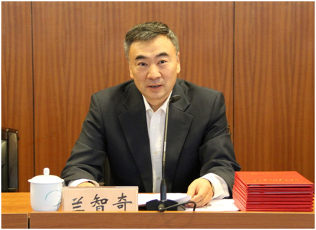

兰智奇在中国民族语文翻译局成立60周年表彰大会上的讲话

同志们：
时光荏苒，岁月如梭。在迎来建局60周年的好日子，昨天，我们在民族文化宫举办了中国民族语文翻译局成立60周年座谈会，以及“桥梁•纽带——中国民族语文翻译局成立60周年展览”。受场地限制，我们局大多数职工未能现场参会。在这里，我首先向大家做一个简要的通报。
这次座谈会的规格很高，各方面出席的代表也很多，可以说，会议非常成功，意义重大，必将在翻译局的发展史上留下浓墨重彩的一笔。应邀参加活动的有：全国人大常委会副委员长向巴平措同志，全国政协副主席、国家民委主任王正伟同志；有，中国外文局局长周明伟同志，全国人大内务司法委员会委员、全国人大常委会机关党组成员王金亮同志，国家民委副主任陈改户同志，全国政协民族和宗教委员会副主任晓敏同志；中国作家协会党组成员、书记处书记、副主席吉狄马加同志，全国政协委员、中国作家出版集团管委会副主任艾克拜尔•米吉提同志。
中央文献研究室、中央编译局，国务院法制办、国家信访局，司法部国家司法考试中心，中国藏学研究中心、中国翻译协会、民族文学杂志社、光明日报社，国家民委机关各部门、直属各单位负责同志；地方民委代表；以及新闻界的朋友们出席了会议。
此外，全国人大常委会原副委员长热地同志还专门发来了贺信，中央办公厅秘书局等单位也以电话、贺信等形式，向翻译局成立60周年表示了祝贺。
正伟同志非常重视，在会上发表了重要讲话，对翻译局60年来所取得的工作成就给予了高度评价，对翻译局几代翻译工作者无私奉献、不懈奋斗的光荣传统给予了充分肯定。过一会，我们将专门组织学习，坚决贯彻正伟同志重要讲话精神，群策群力，促进民族语文翻译事业创新发展，为开启中华民族走向多元一体发展的新时期不懈努力，为实现中华民族伟大复兴的中国梦做出新的更大的贡献！
座谈会后，出席局庆活动的领导同志和各界朋友，亲临展览大厅参观了我们的60周年展，进而更加直观地了解了我们的工作，更加真切地感受了我们的精神面貌。从现场的情况看，大家都对翻译局给予了很高的评价。
活动当天，中国新闻社、中央电视台、人民日报、光明日报等十余家中央媒体，都对我局的局庆活动进行了现场报道。这两天，人民网、中国网、中新网、光明网、国家民委官网等10余家国家级媒体，网易、新浪、搜狐等社会媒体，以及齐鲁晚报网等20余家地方媒体，都转载了局庆当日新闻。
特别是，作为中央级四家党报党刊之一的《光明日报》，在11日当天头版，刊登了题为“用民族语言传递共和国最美之声——写在中国民族语文翻译局成立60周年之际”的特稿，对翻译局进行了重点宣传。而且，在版面位置、稿件字数上，都突破了党报的惯例，引起巨大反响。
同志们，今天，我们在此隆重聚会，回顾历史，展望未来，共同庆祝属于我们自己的节日。
回顾60年的历程，我们看到，翻译局的成立是历史的选择，翻译局的发展是民族团结进步事业的见证。1949年9月，在中国人民政治协商会议第一届全体会议上，第一次出现少民族语文翻译工作者的身影；1955年9月，中华人民共和国民族事务委员会起草呈报《建立民族语文翻译机构的初步方案》；12月12日，周恩来总理批准了这一请示。至此，我国唯一的国家级少数民族语言文字翻译机构正式成立。随后数十年，曾四度更名，翻译语种由五种增加到七种。道路是曲折的，历程是艰难的，但翻译局儿女的意志是坚定的，完成使命的决心是坚定的，为少数民族和民族地区服务的态度是坚定的。目前，我局已经先后多次获得“全国民族团结进步先进集体”“全国先进保密工作集体”“中央国家机关五一劳动奖状”“中央国家机关文明单位”等荣誉称号。
“翻译是我们的使命，质量是我们的根本”。60年来，我局牢记历史使命，不负民族重托，以翻译为桥梁和通道，服务于党和国家的政治生活，把中国最美声音传遍大江南北。
服务于全国性重要会议是翻译局的首要任务。我们圆满完成历届历次全国党代会、人代会、政协会议的文件翻译和同声传译任务，翻译量9284万字，大会现场同声传译5684万字，为党和国家的重大政治活动提供了优质翻译服务，尊重和保障了少数民族在国家政治生活中使用本民族语言文字的权利。正伟副主席去年视察“两会”民族语文翻译工作时，曾指出：民族语文翻译工作是国家民委工作中能够引起党中央、国务院高度重视的非常重要的组成部分。60年来，我们这个民族工作战线上的特殊群体，就是以这样一种特殊身份见证着中国民主政治建设的历程，见证着民族语文翻译学的发展。
翻译马恩列斯著作及党和国家重要文件文献是翻译局的重要职责。第一任老局长朋斯克同志在建局初期，就一再强调：“中央翻译局的工作是党中央、国务院贯彻落实党的民族政策的工具，一定要把党中央、国务院的声音及时准确地用各种少数民族的文字传达到少数民族的心中，增强少数民族群众对党和国家的向心力，维护全国各族人民的大团结。”我局用七种民族语言文字翻译马恩列斯、老一辈无产阶级革命家和国家重要文件文献，在党中央和民族地区之间架设了一座通道和桥梁。
翻译国家法律法规是推进民族地区法治建设的基本要求。依法治国，是坚持和发展中国特色社会主义的本质要求和重要保障，是实现国家治理体系和治理能力现代化的必然要求，事关我们党执政兴国、事关人民幸福安康、事关党和国家长治久安。我局以七种民族文字翻译了多部法律法规单行本、汇编本以及其他法律读物，极大地丰富了少数民族公共文化产品，推进了民族地区的普法教育进程。
面向社会提供优质服务是翻译局的光荣使命。我局自觉服从于党和国家工作大局，发挥自身优势，先后为中央办公厅、中央宣传部、中央统战部、中央文献研究室、外交部、司法部、国务院新闻办公室等几十余家单位提供民族语文翻译服务；近年来，我们注重翻译成果在民族地区的传播，加大送书下乡力度，先后向十几个民族省区赠送各类图书两万余册，为繁荣发展少数民族优秀文化做出了重要贡献。
同志们，向前看，看未来，翻译局承载着期望。这是党和国家的期望，是中华各族儿女的期望，更是中华民族大团结的期望。我国是统一的多民族国家，各民族多元一体，是老祖宗留给我们的宝贵遗产，也是我们国家的重要优势。
新时期，新思路，新发展，我们将高标准、严要求，强化质量意识、精品意识，以一流的翻译水平、一流的翻译队伍，继续做好各项翻译工作，为国家和社会提供更加优质高效的服务，为民族大团结尽一份心，出一份力。
以上是对我们局历史的回顾和未来的展望，但受篇幅所限，还不足以体现我们的成绩和辛苦。
今天，我们大会的一个重要议程，就是隆重表彰在我局工作30年以上的73名资深工作者。翻开他们的工作史，我们能够更近距离地感受翻译局的作风、精神和文化。我们的成绩离不开老一辈翻译局人的付出和努力。是他们铺就了我们翻译事业的第一块砖，是他们种下了我们和谐家园的第一棵树，是他们用自己的青春和坚守，成就了我们今天的收获和辉煌，是他们用行动展现了民族大团结的美好局面。
在此，我代表翻译局党委，以及全局各族干部职工，向在我局连续工作30年以上的老专家、老同事，致以衷心的感谢和崇高的敬意！
俗话说，“家有一老，如有一宝。”我们很幸运，因为我们拥有这样宝贵的财富。回顾这些老同志的工作史，不仅是对过往经历的青春追忆，同时也感受到翻译局和民族语文翻译事业的历史变迁。他们来自不同地域不同民族，为了同一份事业走到一起，相敬相扶亲如一家，一次次创造出辉煌。
他们用“矢志不渝”抒写忠诚。现在的年轻同志也许很难想像过去的生活，没有现代化的办公设备、没有宽敞明亮的办公室、没有高大宜居的住房。但老一辈人凭借着对党忠诚的信念，成就了翻译局的事业；凭借着不离不弃勇攀高峰的精神，实现了自己的理想。说起手写译稿、打字誊录、下厂校对等繁琐的工作环节，他们如数家珍；说起昔日忙碌不停的打字机和电子技术的革新，他们感叹不已；说起大家共同住过的筒子楼和一次次在体育赛事中团结取胜，他们回味无穷。伟大的事业需要伟大的精神，民族语文翻译的事业在老一辈人的无限热爱和倾情奉献中熠熠生辉。
他们用“全心全意”创造辉煌。翻译局的工作方方面面，缺一不可。老一辈人里有翻译和研究人员，态度严谨，细致慎密，像艺术家一样对每一件作品进行精雕细琢，高水平译介国内外无产阶级革命家的理论著作和政策法规文集，如及时雨一般为各族人民送去精神食粮。他们中也有行政和后勤人员，恪尽职守，兢兢业业，以服务为宗旨，从工作业务统筹到人员吃穿住行各个方面解决全局职工的后顾之忧。在大家共同的努力下，翻译局一部部经典作品问世，一次次获得殊荣，他们身上洋溢的民族自豪感不言而喻。
他们用“孜孜不倦”发光发热。从业30多年来，我们的老同志好学不倦，不耻相师，积淀了丰富的工作经验。他们一边做学生，潜心学习理论知识和专业技能，为更好地完成工作打下基础；一边做老师，把自己所学所感毫无保留地传给新人和年轻人，在民族文化之间架起了沟通交流的桥梁。如果把翻译局比作一艘巨轮，那么老一辈人便是海上的指明灯，照亮我们前行的方向；如果把翻译局比作一颗大树，那么老一辈人正是那深深扎根于土壤的树根，默默地为我们汲取和输送着营养。如今，他们已是“桃李满天下，春晖遍四方。”
他们用“守望相助”促建和谐。在党和国家的召唤下，各族兄弟姐妹走到一起。他们来自五湖四海，身上闪亮着不同民族、不同文化的不同特质。然而，这些差异并没有让他们生疏，反而成为拉近彼此关系的橄榄枝。他们一起品尝民族特色美食，一起庆祝民族特色节日，一起体会各民族的传统文化。有人不禁感叹：“来到翻译局真喜庆，每年可以过好多个节日。”在翻译局的大家庭里，他们相敬如宾，守望相助，营造了大家庭的和谐之风，用行动展现了民族大团结的美好局面。
同志们，推动民族语文翻译事业的发展是我们共同肩负的责任。“多元一体”铸根基，“和而不同”创伟业。回眸60年峥嵘岁月，延续着几代翻译局人的血脉，全局各族职工你中有我、我中有你，既保持自己的个性，又有着一致的认同、和谐的关系。年轻同志要打牢思想基础，继承和发扬老一辈人的优良传统，敢于担当，有所作为。“非淡泊无以明志，非宁静无以致远。”老一辈人用实际行动诠释了这句话的深刻内涵。全局同志要静心怡情，继承和发扬任劳任怨默默奉献的精神，继承和发扬无怨无悔不离不弃的品质，手挽手、肩并肩、心连心地走向新的起点，推动民族语文翻译工作再创辉煌！
谢谢大家！